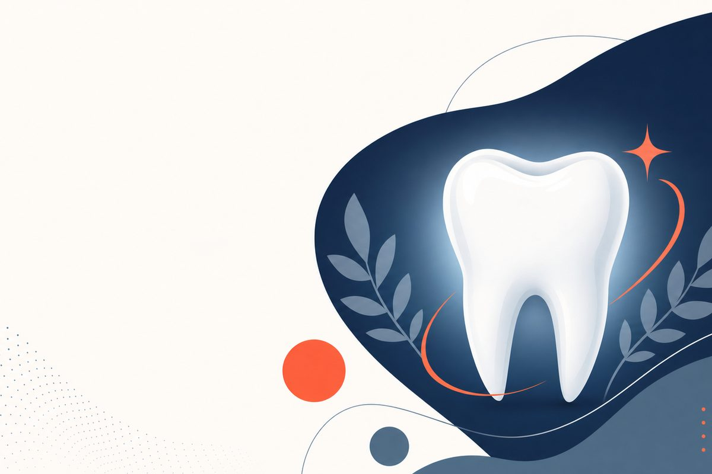

Key Takeaways
- A primary care or telemedicine physician can manage dental pain with medications, such as NSAIDs plus acetaminophen, and treat dental infections that have spread. We do not perform dental procedures. This is bridge care until you see a dentist.
- The 2024 ADA guideline makes NSAIDs such as ibuprofen, alone or combined with acetaminophen, first-line treatment for acute dental pain in adolescents, adults, and older adults. The panel found these likely provide better pain relief with a more favorable safety profile than opioids.[1]
- The ADA's antibiotic guideline recommends against antibiotics for most pulp and root-tip conditions that cause toothache and says dental treatment should come first.[2] It recommends antibiotics when infection causes systemic involvement such as fever or malaise, and suggests them for a localized abscess when dental treatment is not immediately available.[6]
- Ludwig's angina, a fast-growing bacterial infection of the floor of the mouth, is a life-threatening emergency. Swelling can spread quickly to the tongue and throat and make it hard to breathe.[5]
- Clindamycin is not a first-line antibiotic for dental infections. The ADA guideline lists it only among the options for penicillin allergy and notes its risk of Clostridioides difficile infection, and its FDA label carries a boxed warning for severe colitis.[6], [11]
- Dental pain can come from sources that have nothing to do with a tooth: sinus infections, TMJ disorders, and referred nerve pain can all produce convincing toothache symptoms.

Dental pain is one of the most common reasons patients contact me through telemedicine. They can't get a dentist appointment for two weeks, the pain started at 11 PM on a Friday, or they're traveling and their usual dentist is hundreds of miles away. The question is always some version of the same thing: What can you actually do for me?
The honest answer involves two parts. Yes, there is real medical management available: effective pain relief and, in specific situations, antibiotics that can prevent a worsening infection. But this is bridge care, not definitive care. A physician treats the pain and the infection. Only a dentist treats the tooth itself. Understanding that distinction helps you get the right care from the right provider at the right time.
This guide covers the clinical explanation given to patients who present with dental pain: the underlying causes, how to read your symptoms, what medications the evidence actually supports, which symptoms mean skip the appointment and go to the ER, and what you can safely do at home while waiting for a dentist.
What Causes Dental Pain?
Pain in and around the teeth and jaw comes from several different sources. Getting the cause right matters, not just academically but because the management differs significantly depending on what's actually happening.
Cavities (Dental Caries)
A cavity is bacterial erosion of the tooth's outer layers: enamel first, then dentin. Early cavities produce no pain at all. Once bacteria reach the dentin, you'll notice sensitivity to cold, sweet foods, or air. When decay reaches the pulp (the soft inner nerve tissue), the pain becomes continuous, intense, and often throbbing. At that stage, the tooth needs a root canal or extraction. Medication manages the pain, but it does not reverse the damage.
Dental Abscess
An abscess is a pocket of pus caused by bacterial infection. There are two types worth distinguishing. A periapical abscess forms at the root tip when bacteria invade the pulp, typically as a consequence of untreated decay or a cracked tooth. A periodontal abscess forms in the gum tissue alongside a tooth, usually associated with gum disease. Both produce localized swelling, throbbing pain, sensitivity to pressure when biting, and sometimes a visible bump on the gum that leaks a salty, foul-tasting fluid.
Cracked Tooth Syndrome
Cracks in teeth are notoriously difficult to diagnose; they often don't show on X-rays. The classic presentation is sharp pain when biting down on a specific spot, or a brief, electric jolt of pain when releasing bite pressure. Temperature sensitivity may be present or absent. Untreated cracks can propagate to the root and become irreparable. Until you see a dentist, avoiding chewing on that side is the most practical advice.
Pericoronitis
Pericoronitis is inflammation of the gum tissue around a partially erupted tooth, most often a wisdom tooth. Bacteria become trapped under the gum flap that partially covers the crown. The result is pain and swelling at the back of the jaw, sometimes accompanied by difficulty opening the mouth, bad breath, and a bad taste. Most cases resolve with local treatment, including cleaning and irrigation under the gum flap, along with careful oral hygiene. Antibiotics are reserved for severe cases, where infection is spreading or there are systemic symptoms such as fever.[7]
TMJ Disorders
The temporomandibular joint connects the jawbone to the skull just in front of the ear. When this joint or the surrounding muscles are inflamed or dysfunctional, the pain can convincingly mimic a toothache. TMJ pain tends to be dull and aching rather than sharp, often affects a broader area of the face and jaw, and characteristically worsens with jaw movement: chewing, talking, yawning. A clicking or popping sound when opening the mouth is common. Unlike true dental pain, TMJ discomfort typically does not respond to temperature or sweet foods.
Sinusitis
The maxillary sinuses sit behind the cheekbones and above the upper teeth, and in some people the roots of the upper teeth extend right into the sinus. When those sinuses become inflamed, the pain can feel entirely dental. The distinguishing features: sinus-related tooth pain usually causes tenderness in several upper teeth at once rather than a single tooth, and it gets stronger with a change in head position, such as bending over. A toothache from a dental cause is generally isolated to one tooth and may be sensitive to temperature changes.[9]
Types of Dental Pain: Reading Your Symptoms
The character of your pain carries diagnostic information. I ask patients to describe it in three dimensions: quality, timing, and provocation.
| Pain Character | What It Suggests |
|---|---|
| Sharp, brief jolt with cold or sweet that goes away in seconds | Dentin sensitivity or early-to-moderate decay. The tooth's nerve is still healthy and responsive. |
| Lingering ache after cold that takes 30+ seconds to resolve | Pulpitis: the pulp is inflamed. May be reversible if caught early, but often points to irreversible pulp damage. |
| Constant, throbbing, spontaneous (not triggered) | Pulp necrosis or abscess. The nerve is dying or already infected. This is the most common reason patients call me at night. |
| Sharp pain with biting down, relief when pressure is released | Cracked tooth. Pain on release (rather than on initial bite) is the classic cracked-tooth sign. |
| Dull ache across multiple teeth, worsens bending over | Likely sinusitis or upper respiratory source, not dental. Look for accompanying nasal congestion or facial pressure. |
| Diffuse jaw/face ache worse with chewing, clicking jaw | TMJ disorder or masseter muscle tension. No temperature sensitivity. |
| Throbbing pain with swelling, fever, bad taste in mouth | Dental abscess with possible infection spread. This warrants medical evaluation. |
Spontaneous pain, meaning pain that wakes you up at night or arrives without any trigger, is the single feature that most consistently indicates a tooth needs professional attention urgently. When patients in clinical care describe being woken at 3 AM by tooth pain, that is not a "wait and see" situation.
When Dental Pain Is a Medical Emergency
Most dental pain is not a medical emergency. It's urgent, meaning it needs care soon, but it is not the kind of thing that sends you to the ER at midnight. Some presentations, however, are genuinely life-threatening. Knowing the difference matters.
- Difficulty breathing or swallowing[15], [17]
- Swelling extending into your neck or below your chin[15]
- Tongue that is swollen or is being pushed up or out of the mouth, or a raised floor of the mouth[7], [15]
- A swollen or painful eye, or sudden problems with your eyesight[17]
- Fever combined with facial or jaw swelling[6], [16]
- Trismus: finding it hard to open your mouth[7], [17]
- Swelling that is worsening despite being on antibiotics[6]
- Severe dehydration from inability to swallow
- Confusion, extreme fatigue, or rapid heart rate alongside dental pain[15], [18]
Ludwig's Angina
Ludwig's angina is not a heart condition. It is a fast-growing cellulitis infection of the floor of the mouth, and its most common cause is an abscessed lower molar tooth.[5] It can come on suddenly and spread rapidly, and swelling can spread quickly to the tongue and throat, making it hard to breathe.[5] Its symptoms include swelling around the jaw and upper neck, fever, trouble swallowing and breathing, elevation of the floor of the mouth, and displacement of the tongue, with a risk of the airway becoming blocked.[7]
Other warning signs include drooling, unusual speech that sounds like the person has a "hot potato" in the mouth, neck pain, swelling or redness, and confusion or other mental changes.[15] If any of these are present, that patient belongs in an emergency department, not urgent care and not a telemedicine visit. Breathing difficulty is an emergency: go to the emergency room or call 911 right away.[15]
Deep Space Infections and Facial Cellulitis
The jaw, floor of the mouth, and neck contain preformed anatomical spaces, such as the sublingual, submandibular, and parapharyngeal spaces, that allow an infection to spread into surrounding areas.[7] Deep neck infections most often start from a tooth or a tonsil, and they can extend down into the chest (descending necrotizing mediastinitis) and lead to airway obstruction or sepsis.[19] Facial swelling that is growing rapidly, is warm and red, and is accompanied by fever is not something to manage with a phone call and oral antibiotics alone. A CT scan is the standard test to identify which spaces are involved, and its results guide surgical drainage.[19]
Sepsis from Dental Source
Almost any infection can lead to sepsis, the body's extreme response to an infection. Sepsis is a life-threatening emergency that, without fast treatment, can quickly lead to tissue damage, organ failure, and death. Possible signs include fever, shivering, or feeling very cold; a high heart rate or weak pulse; shortness of breath; confusion or disorientation; extreme pain or discomfort; and clammy or sweaty skin.[18] Blood infection is a recognized complication of a tooth abscess.[16] A patient with a known dental infection who develops these systemic signs needs emergency evaluation without delay.
What a Physician Can Prescribe for Dental Pain
When patients present with dental pain, I'm working within a specific scope. My job is to control the pain and, when genuinely indicated, treat an infection that has spread. Here is what the evidence supports.
NSAIDs and Acetaminophen: The Evidence Is Clear
The 2024 ADA clinical practice guideline on acute dental pain, developed by the ADA Science and Research Institute with the University of Pittsburgh and the University of Pennsylvania using the GRADE approach, makes NSAIDs alone or combined with acetaminophen first-line therapy for acute dental pain after tooth extraction and for the temporary management of toothache in adolescents, adults, and older adults.[1] This recommendation rests on the panel's systematic reviews and meta-analyses of the evidence, not on caution alone.[1]
A 2018 overview of systematic reviews by Moore et al. in JADA included five eligible reviews of oral analgesic medications for acute pain.[3] Combinations of ibuprofen and acetaminophen had the highest association with treatment benefit and the highest proportion of adult patients experiencing maximum pain relief, and nonsteroidal medications with or without acetaminophen offered the most favorable balance between benefits and harms. Medications and combinations that included opioids were among those most often associated with acute adverse events in both children and adults.[3]
What this means for patients: ibuprofen combined with acetaminophen is an effective option for dental pain. The ADA's summary of the evidence notes that 400 mg of ibuprofen with 1,000 mg of acetaminophen was more effective than any opioid-containing regimen and was associated with a lower risk of adverse events.[10]
Mild to moderate pain: Ibuprofen 400 to 600 mg on a fixed schedule every 6 hours for 24 hours, then ibuprofen 400 mg every 4 to 6 hours as needed.[10] Take ibuprofen with food or milk if it upsets your stomach.[13]
Moderate to severe pain: Ibuprofen 400 to 600 mg plus acetaminophen 500 mg on a fixed schedule every 6 hours for 24 hours, then ibuprofen 400 mg plus acetaminophen 500 mg every 6 hours as needed.[10]
Important limits: These ibuprofen doses are higher than the over-the-counter label, which says not to exceed 6 tablets of 200 mg in 24 hours unless directed by a doctor, so use them only on a clinician's advice.[13] The 2024 ADA guideline gives the maximum daily dose of ibuprofen as 2,400 mg and of acetaminophen as 4,000 mg.[1] Extra Strength 500 mg acetaminophen labels say not to take more than 6 caplets in 24 hours unless directed by a doctor, and warn that severe liver damage may occur with more than 4,000 mg in 24 hours, with other drugs containing acetaminophen, or with 3 or more alcoholic drinks every day.[12] Tell your doctor if you have or have ever had liver disease.[14] Do not take ibuprofen without asking a doctor first if you have had stomach ulcers or bleeding problems, take a blood thinner, or have kidney disease, high blood pressure, or heart disease. If you are pregnant or breast-feeding, ask a health professional before use; it is especially important not to use ibuprofen during the last 3 months of pregnancy unless a doctor directs it.[13]
The two drugs work through different mechanisms: ibuprofen reduces prostaglandin-mediated inflammation at the injury site, while acetaminophen acts centrally through pathways that are still being characterized. In trials after third-molar extraction, the combination gave greater pain relief than either drug alone, with adverse effects similar to those of the individual drugs.[8]
Antibiotics for Dental Infections: When They Are Warranted
This is where I need to be precise, because antibiotic prescribing for dental pain is one of the most mismanaged areas in outpatient medicine. In symptomatic irreversible pulpitis, the inflamed pulp is not caused by infection, so antibiotics have nothing to treat. Antibiotics taken by mouth may not reach an infected tooth that lacks a blood supply. And unnecessary antibiotics carry real harms, including antibiotic-resistant infections and C. difficile infection.[6]
The ADA's antibiotic guideline is clear: for symptomatic irreversible pulpitis, symptomatic apical periodontitis, and localized acute apical abscess in adults who are not severely immunocompromised, dentists should prioritize dental treatment such as pulpotomy, pulpectomy, nonsurgical root canal treatment, or incision and drainage instead of antibiotics.[2] There is an important exception for people who cannot get dental care right away. For a dead tooth with a localized acute abscess when dental treatment is not immediately available, the guideline suggests amoxicillin or penicillin VK along with urgent dental referral. For a dead tooth with symptomatic apical periodontitis in the same situation, it suggests a delayed prescription, to be filled only if symptoms worsen or dental treatment has not happened.[6]
Antibiotics are appropriate when a dental infection has progressed to systemic involvement, such as fever or malaise.[2], [6] Swollen neck glands, a swollen jaw, and trouble opening the mouth are also warning signs of a more serious or spreading infection.[7], [16]
| Scenario | Antibiotics Indicated? | Rationale |
|---|---|---|
| Toothache with no fever, no swelling, no systemic symptoms: pain only | No | Antibiotics do not treat pulpal pain. NSAIDs + acetaminophen. Dentist for definitive treatment. |
| Localized dental abscess (gum bump, visible pus pocket), no fever, no facial swelling, patient feels generally well | No if dental treatment is available soon; possibly if it is not | The ADA guideline prioritizes drainage or root canal treatment over antibiotics. When dental treatment is not immediately available, it suggests amoxicillin or penicillin VK plus urgent dental referral.[2], [6] |
| Dental abscess with fever, facial swelling, or feeling systemically unwell | Yes | Infection has spread beyond the tooth, so antibiotics are appropriate. Urgent dental referral still required.[6] |
| Pericoronitis (wisdom tooth gum pain) with swelling confined to the area | Usually no | Most pericoronitis resolves with local treatment and oral hygiene. Antibiotics for spreading infection or systemic symptoms only.[7] |
| Immunocompromised patient (chemotherapy, transplant, uncontrolled diabetes) with any dental infection | Needs individual evaluation | The ADA antibiotic guideline does not cover adults with weakened immune systems, such as people undergoing chemotherapy, so these patients need prompt, individualized evaluation by a clinician.[6] |
| Signs of deep space infection or Ludwig's angina | Yes: IV antibiotics, ER immediately | This needs hospital care: securing the airway, antibiotics given through a vein, and sometimes surgical drainage.[5], [15] |
Which Antibiotic?
When antibiotics are clinically appropriate for a dental infection, the ADA guideline suggests amoxicillin 500 mg three times a day or penicillin VK 500 mg four times a day, for 3 to 7 days.[6]
For a reported penicillin allergy, the guideline suggests cephalexin, azithromycin, or clindamycin. It also notes that although about 10% of the population reports a penicillin allergy, less than 1% is truly allergic.[6] For infections that do not respond promptly, the guideline says clinicians may add metronidazole to first-line treatment, or stop first-line treatment and switch to amoxicillin/clavulanate.[6]
Clindamycin, historically a common choice for penicillin-allergic patients with dental infections, carries a greater risk of Clostridioides difficile infection, and the ADA guideline ordered its list of antibiotics by balancing benefits against harms such as this.[6] Its FDA label carries a boxed warning: because it has been associated with severe colitis that may end fatally, it should be reserved for serious infections where less toxic antimicrobial agents are inappropriate.[11] Its use should be reserved for situations where safer alternatives are genuinely unsuitable.
What a Physician Cannot Do
Being clear about this is as important as describing what I can do. Patients sometimes arrive at a telemedicine visit hoping for a solution that requires a dental office.
No dental procedures. A physician cannot perform a root canal, extract a tooth, drill out decay, place a filling, or lance a dental abscess. These procedures require equipment, anesthesia training, and dental licensure. Full stop.
No definitive treatment. Even if the prescribing approach is antibiotics for a spreading infection and the infection resolves, the underlying tooth problem remains. Antibiotics treat the systemic spread; they do not remove infected pulp, drain an abscess cavity, or restore tooth structure. Without dental treatment, most abscesses recur.
No routine opioid prescribing for dental pain. The 2024 ADA guideline recommends avoiding opioids for toothache and using NSAIDs alone or with acetaminophen as first-line therapy, reserving opioids for when first-line therapy is insufficient or NSAIDs cannot be used.[4] It also tells clinicians to avoid routine just-in-case opioid prescribing, and found that NSAIDs alone or with acetaminophen likely provide better pain relief with a more favorable safety profile than opioids.[1] Opioids also do nothing for the underlying dental pathology. I will not prescribe opioids for routine toothache.
What I can do is give you real pain control while you wait for a dentist, identify whether you have an infection that has spread and genuinely needs antibiotics, and recognize the red flags that mean you need to stop reading this and go to an ER.
Dental Abscess: A Closer Look
The dental abscess is the scenario where patients most often expect antibiotics and where physicians most often overprescribe them. It's worth spending a moment on the logic here.
An abscess is a contained collection of pus. The body cannot reabsorb pus; it has to be drained. Antibiotics can reduce the surrounding infection and prevent spread, but they cannot drain an abscess by themselves. A dental abscess that is properly treated requires physical drainage, either through the tooth (root canal or extraction) or by a dentist making an incision. A course of antibiotics may temporarily reduce swelling and pain, but without drainage the abscess almost always returns once the antibiotics stop.
This is why the ADA guideline tells dentists to prioritize dental treatment, such as incision and drainage, over antibiotics for a localized abscess in adults who are not severely immunocompromised.[2] That is not because it's safe to ignore the abscess, but because antibiotics alone are not the appropriate treatment. When dental treatment is not immediately available, the guideline does suggest amoxicillin or penicillin VK plus urgent dental referral, because the risk of the infection spreading is higher.[6] Antibiotics are a bridge, not a cure.
When the prescribing approach is antibiotics for a patient with a dental abscess, I make sure they understand two things. First, the antibiotics may reduce swelling and make them feel better, but the underlying problem, the infected tooth, still needs dental treatment. Second, "feeling better" on antibiotics is not a reason to cancel the dentist appointment.
Pain Management Evidence: The Ibuprofen-Acetaminophen Data
The strongest evidence for the ibuprofen-acetaminophen combination in dental pain comes from work by Moore, Hersh, and colleagues on postoperative dental pain, primarily after third-molar extractions. Their 2013 review in JADA reported that randomized trials found the combination provided greater pain relief than ibuprofen or acetaminophen alone after third-molar extractions.[8] The 2018 overview by Moore et al. found that, across five eligible systematic reviews, ibuprofen-acetaminophen combinations had the highest proportion of adult patients experiencing maximum pain relief.[3]
The 2024 ADA guideline, developed with the GRADE approach, formalized these findings into 18 recommendations and six good practice statements, which a 2025 commentary in the American Journal of Emergency Medicine summarized for emergency and urgent care settings.[4] The ADA's summary table lists ibuprofen 400 to 600 mg plus acetaminophen 500 mg on a fixed schedule every 6 hours for 24 hours for moderate to severe pain.[10]
The mechanism behind the synergy: ibuprofen inhibits cyclooxygenase enzymes (COX-1 and COX-2), reducing prostaglandin production and blocking peripheral sensitization of pain receptors at the injury site. Acetaminophen acts through a separate pathway, modulating central pain processing, likely through the endocannabinoid system and serotonergic pathways. Because the two drugs attack pain through different mechanisms, combining them at lower doses of each produces better analgesia than pushing either to higher doses alone, while avoiding dose-related side effects from either drug.
For context: opioids increase the risk of dizziness, drowsiness, nausea, and vomiting, and carry risks of physiological dependence, substance use disorder, misuse, and respiratory depression.[1] The adverse effects of the ibuprofen-acetaminophen combination were similar to those of the individual drugs, meaning the combination does not appear to add new risk.[8] That is a meaningful difference in clinical practice.
When to See a Doctor vs. Dentist vs. ER
The right next step depends on what your symptoms are actually telling you. Here is the framework used in practice.
| Your Situation | Where to Go | Timeline |
|---|---|---|
| Tooth pain, no fever, no swelling, no systemic symptoms; you just need pain management and can get a dentist appointment soon | OTC ibuprofen + acetaminophen, dentist at next available appointment | Within a few days |
| Significant tooth pain, unable to reach a dentist, need prescription-strength pain management or want a physician to evaluate for infection signs | Primary care doctor or telemedicine visit | Same day or next day |
| Dental abscess with fever, facial swelling, or feeling unwell; infection appears to be spreading | Primary care / telemedicine for antibiotics, plus urgent dentist referral | Same day |
| Dental pain with jaw stiffness (trismus), neck swelling, difficulty swallowing, or spreading facial swelling | Emergency Room | Immediately |
| Breathing difficulty, tongue swelling, floor-of-mouth firmness | Emergency Room; call 911 if severe | Immediately |
| Tooth pain with signs of sepsis: high fever, rapid heart rate, confusion, feeling extremely unwell | Emergency Room | Immediately |
A telemedicine visit is appropriate when you need a physician's assessment, a prescription for appropriate pain medication, or antibiotics for a spreading infection. It is not appropriate as a substitute for an ER when true emergency signs are present. If you're describing neck swelling or difficulty swallowing to me during a video visit, my first instruction is to end the call and go to the nearest emergency room.
Home Remedies: What Works and What Doesn't
When a dentist appointment is days away and you're in pain, patients understandably try everything. Here's what the evidence actually says.
What Has Real Support
Salt water rinse. Warm salt water (half a teaspoon of salt in 8 oz of warm water, swished gently for 30 seconds) is genuinely useful. It reduces bacterial load in the mouth, helps clear food debris from around the painful area, and has mild anti-inflammatory properties. It won't cure an infection, but it is a reasonable adjunct to medication and carries zero risk.
Cold compress. A cold pack applied to the outside of the jaw, 20 minutes on and 20 minutes off, reduces swelling and provides mild topical pain relief through vasoconstriction. This is appropriate for swelling from a recent injury or procedure. Do not apply heat to a dental abscess, as warmth encourages bacterial growth and can accelerate spread.
Sleeping with your head elevated. Tooth pain is notoriously worse at night when you lie flat. Elevating your head reduces blood pressure in the inflamed tissue, which typically reduces throbbing pain. An extra pillow is a simple, free intervention that many patients find genuinely helpful.
What Doesn't Work as Advertised
Clove oil and eugenol. This is one of the most persistent home remedy myths in dentistry. Eugenol (the active compound in clove oil) is a real pharmacological agent; dentists actually use it in certain clinical preparations. Applied directly to a painful tooth or gum, undiluted clove oil can temporarily numb the area. However, it can also cause chemical burns to gum tissue when applied without dilution, and provides no treatment for the underlying cause. It's a distraction, not a solution.
Aspirin held against the tooth. Placing an aspirin tablet directly on a painful tooth or gum is not how aspirin works. Aspirin's analgesic effect is systemic, not topical. Holding it against tissue causes direct acid damage to the gum, sometimes severe enough to produce a chemical burn called "aspirin burn." Take aspirin by swallowing it; do not apply it topically.
Alcohol rinse. Rinsing with whiskey or another alcohol may temporarily numb the area, but provides no antibacterial benefit at the concentrations involved and can irritate inflamed tissue. It is not a meaningful intervention.
Garlic, onion, or "natural antibiotics." Garlic contains allicin, which has demonstrated antimicrobial properties in laboratory settings. Rubbing garlic on your gum bears no meaningful relationship to its lab activity. These are not treatment for a dental infection.
Frequently Asked Questions
Yes, within limits. A primary care physician can prescribe appropriate pain medications, typically ibuprofen plus acetaminophen, and antibiotics when a dental abscess has spread beyond the tooth (signs include fever, facial swelling, or feeling systemically unwell). What a physician cannot do is perform dental procedures: no drilling, no tooth extraction, no root canals, no incision and drainage. The physician's role is bridge care: managing pain and infection until you can see a dentist.
Usually no. The American Dental Association's antibiotic guideline recommends against antibiotics for most pulp and root-tip conditions that cause toothache, including symptomatic irreversible pulpitis and symptomatic apical periodontitis, and tells dentists to prioritize dental treatment, such as root canal treatment or incision and drainage, for a localized abscess in adults who are not severely immunocompromised.[2] Antibiotics are recommended when the infection causes systemic involvement such as fever or malaise, and the guideline suggests them for a localized abscess when dental treatment is not immediately available.[6] For a simple toothache without these signs, ibuprofen and acetaminophen are far more appropriate than antibiotics.
The best-supported combination is ibuprofen plus acetaminophen. A 2018 overview of systematic reviews by Moore et al. found that ibuprofen-acetaminophen combinations had the highest proportion of adults experiencing maximum pain relief, and that medications containing opioids were among those most often linked to acute side effects.[3] The ADA's summary table lists ibuprofen 400 to 600 mg plus acetaminophen 500 mg every 6 hours for moderate to severe dental pain.[10] Take ibuprofen with food or milk if it upsets your stomach. Do not take more acetaminophen than the label allows (for 500 mg caplets, no more than 6 in 24 hours unless a doctor directs otherwise),[12] and ask a doctor before taking ibuprofen if you have kidney disease, have had stomach ulcers or bleeding problems, or take a blood thinner.[13]
Go to an emergency room if you have difficulty breathing or swallowing, swelling extending into your neck or under your chin, a swollen or painful eye, a tongue that is swollen or pushed up, fever with facial swelling, trouble opening your mouth, confusion or extreme fatigue, or swelling that is worsening despite being on antibiotics.[15], [17] These signs can mean Ludwig's angina or a deep neck infection, conditions that can block the airway and need hospital treatment, usually with antibiotics through a vein and sometimes surgical drainage.[5], [15]
When antibiotics are warranted, the ADA guideline suggests amoxicillin 500 mg three times a day or penicillin VK 500 mg four times a day, for 3 to 7 days.[6] For a reported penicillin allergy, it suggests cephalexin, azithromycin, or clindamycin.[6] Clindamycin carries a greater risk of Clostridioides difficile infection, and its FDA label has a boxed warning that it should be reserved for serious infections where less toxic antibiotics are inappropriate.[6], [11] Regardless of which antibiotic is prescribed, dental treatment such as drainage of the abscess is still required for definitive resolution.
Yes. The maxillary sinuses sit behind the cheekbones and above the upper teeth, and in some people the roots of the upper teeth extend into the sinus. When those sinuses are inflamed, the pain can feel like a dental problem. Sinus-related tooth pain typically causes tenderness in several upper teeth at once (not just one) that gets stronger with a change in head position, such as bending over. A toothache from a dental cause is generally isolated to one tooth and may be sensitive to temperature changes.[9]
References
- Carrasco-Labra A, Polk DE, Urquhart O, et al. Evidence-based clinical practice guideline for the pharmacologic management of acute dental pain in adolescents, adults, and older adults: A report from the American Dental Association Science and Research Institute, the University of Pittsburgh, and the University of Pennsylvania. J Am Dent Assoc. 2024;155(2):102-117.e9. https://pubmed.ncbi.nlm.nih.gov/38325969/
- American Dental Association. Antibiotics for Dental Pain and Swelling Guideline (2019). Endorsed by the American College of Emergency Physicians. Accessed November 15, 2026. https://www.ada.org/resources/research/science/evidence-based-dental-research/antibiotics-for-dental-pain-and-swelling
- Moore PA, Ziegler KM, Lipman RD, et al. Benefits and harms associated with analgesic medications used in the management of acute dental pain: An overview of systematic reviews. J Am Dent Assoc. 2018;149(4):256-265.e3. https://pubmed.ncbi.nlm.nih.gov/29599019/
- Green VG, Polk DE, Turturro MA, Moore PA, Carrasco-Labra A. Evidence-based clinical practice guidelines for the management of acute dental pain. Am J Emerg Med. 2025;89:247-253. https://pmc.ncbi.nlm.nih.gov/articles/PMC12754838/
- Cleveland Clinic. Ludwig's Angina. Last updated February 26, 2025. Accessed November 15, 2026. https://my.clevelandclinic.org/health/diseases/23457-ludwigs-angina
- Lockhart PB, Tampi MP, Abt E, et al. Evidence-based clinical practice guideline on antibiotic use for the urgent management of pulpal- and periapical-related dental pain and intraoral swelling: A report from the American Dental Association. J Am Dent Assoc. 2019;150(11):906-921.e12. https://pubmed.ncbi.nlm.nih.gov/31668170/
- Schmidt J, Kunderova M, Pilbauerova N, Kapitan M. A review of evidence-based recommendations for pericoronitis management and a systematic review of antibiotic prescribing for pericoronitis among dentists: Inappropriate pericoronitis treatment is a critical factor of antibiotic overuse in dentistry. Int J Environ Res Public Health. 2021;18(13). doi:10.3390/ijerph18136796. https://pmc.ncbi.nlm.nih.gov/articles/PMC8296928/
- Moore PA, Hersh EV. Combining ibuprofen and acetaminophen for acute pain management after third-molar extractions: translating clinical research to dental practice. J Am Dent Assoc. 2013;144(8):898-908. https://pubmed.ncbi.nlm.nih.gov/23904576/
- Zapata K. Sinusitis, dental infection or both? UT Health San Antonio News; May 2, 2023. Accessed November 15, 2026. https://news.uthscsa.edu/sinusitis-dental-infection-or-both/
- ADA Library & Archives. Oral Analgesics for Acute Dental Pain. American Dental Association. Last updated February 2, 2024. Accessed November 15, 2026. https://www.ada.org/resources/ada-library/oral-health-topics/oral-analgesics-for-acute-dental-pain
- U.S. National Library of Medicine, DailyMed. CLEOCIN HYDROCHLORIDE (clindamycin hydrochloride) capsule, prescribing information. Revised September 2026. Accessed November 15, 2026. https://dailymed.nlm.nih.gov/dailymed/lookup.cfm?setid=df9a2a41-b132-4f43-8940-b2d773b1369a
- U.S. National Library of Medicine, DailyMed. TYLENOL EXTRA STRENGTH (acetaminophen) tablet, film coated, Drug Facts label. Updated April 15, 2024. Accessed November 15, 2026. https://dailymed.nlm.nih.gov/dailymed/drugInfo.cfm?setid=65bf1556-f25a-9439-e053-2a91aa0a3194
- U.S. National Library of Medicine, DailyMed. IBUPROFEN (ibuprofen 200 mg) tablet, film coated, Drug Facts label. Revised June 19, 2024. Accessed November 15, 2026. https://dailymed.nlm.nih.gov/dailymed/drugInfo.cfm?setid=8fc65767-1783-4f7f-8680-9e43ba4d5481
- MedlinePlus. Acetaminophen. MedlinePlus Drug Information, U.S. National Library of Medicine. Last revised October 15, 2025. Accessed November 15, 2026. https://medlineplus.gov/druginfo/meds/a681004.html
- MedlinePlus. Ludwig angina. MedlinePlus Medical Encyclopedia, U.S. National Library of Medicine. Reviewed January 29, 2025. Accessed November 15, 2026. https://medlineplus.gov/ency/article/001047.htm
- MedlinePlus. Tooth abscess. MedlinePlus Medical Encyclopedia, U.S. National Library of Medicine. Reviewed February 5, 2026. Accessed November 15, 2026. https://medlineplus.gov/ency/article/001060.htm
- NHS. Dental abscess. Page last reviewed March 18, 2026. Accessed November 15, 2026. https://www.nhs.uk/conditions/dental-abscess/
- Centers for Disease Control and Prevention. About Sepsis. Last updated August 17, 2026. Accessed November 15, 2026. https://www.cdc.gov/sepsis/about/index.html
- Cobzeanu BM, Moisii L, Palade OD, et al. Management of deep neck infection associated with descending necrotizing mediastinitis: A scoping review. Medicina (Kaunas). 2025;61(2). doi:10.3390/medicina61020325. https://pubmed.ncbi.nlm.nih.gov/40005441/